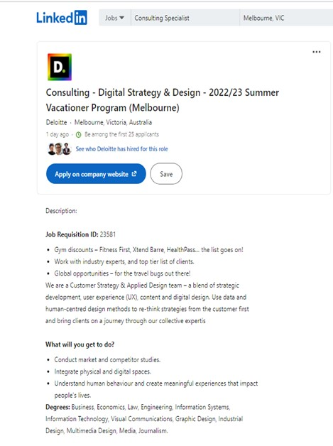
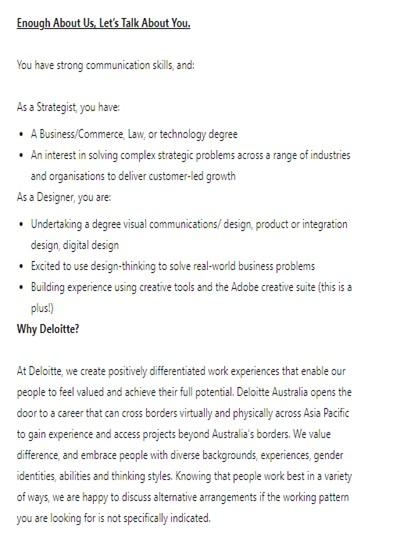

My dream job would be a digital strategist in the IT field at Deloitte. This position appeals to me because of the benefits that they give the employees. If hired, I will get to work with other experienced it specialists and customers. Working with the specialists will give me a more dept understanding for my future computing tasks. The tasks such as marketing appeal to me as I have experience in marketing projects from my previous studies. It also requires us to understand human behaviour. I’m also confident I understand human behaviour as I have been working in the customer service industry for over 6 years in different industries from small to big businesses. Technical skills are also needed as the company requires you to design things on UX softwares like Sketch.This requirement fits my personality perfectly as I am a meditator. It doesn’t really require experience which is great as I am just a beginner. This job is perfect for building my IT skills in the real world and it will help me gain experience for me to put on my resume for high paying it jobs that require more experience.
I currently have a Diploma of International Business and this degree has helped me gain the basic marketing skills required for a digital strategist. I have also completed a leadership course at RMIT last semester, and I was the project leader that assigned tasks to everyone in the group. I have also completed a digital marketing course, and this has gotten me a few technology job interviews. I am aiming to get a degree in Bachelor of Business as my dream job requires a bachelor’s degree of Information Technology or Business. A digital strategist has to analyse and develop marketing material and post on social media. I have also had experience improving Instagram pages for my friend’s bakery business. I had to use the statistic tools to create new marketing plans to attract new customers.
While I complete my business degree, I plan to build up my marketing skills further for the experience by completing a short summer internship program. I will be completing the summer internship program on the holidays of 2023. The internship does not require work experience, but it requires you to be in your last or 2nd last year of your degree. This internship will provide me with 8 weeks of working in NAB and the company can give me a permanent position. It will also help build new skills of creativity and project management. It will also help me develop communication skills with different stakeholders around the world to prepare me for my future job as a digital strategist.
 